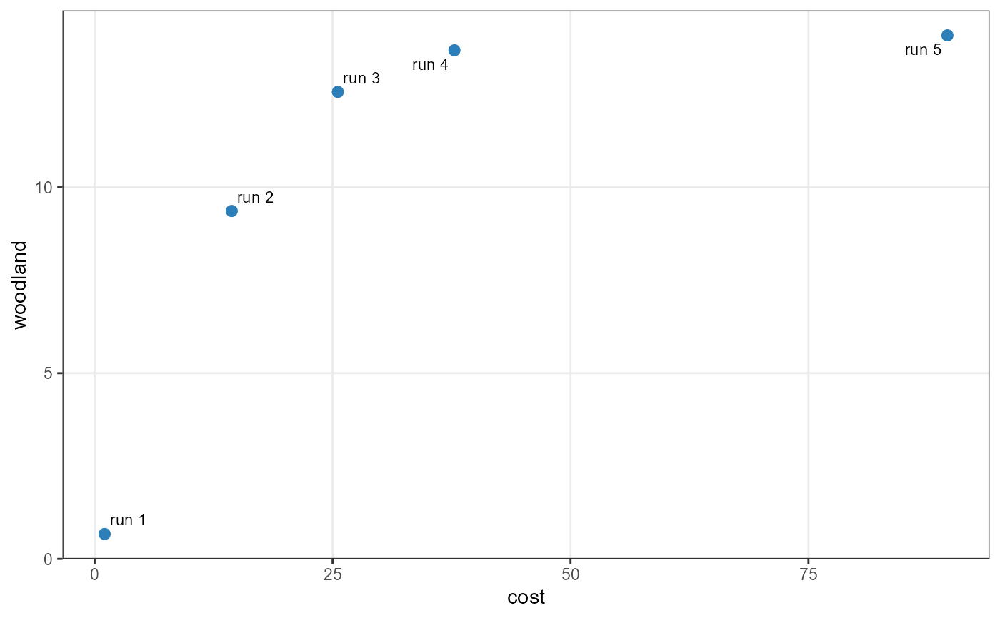
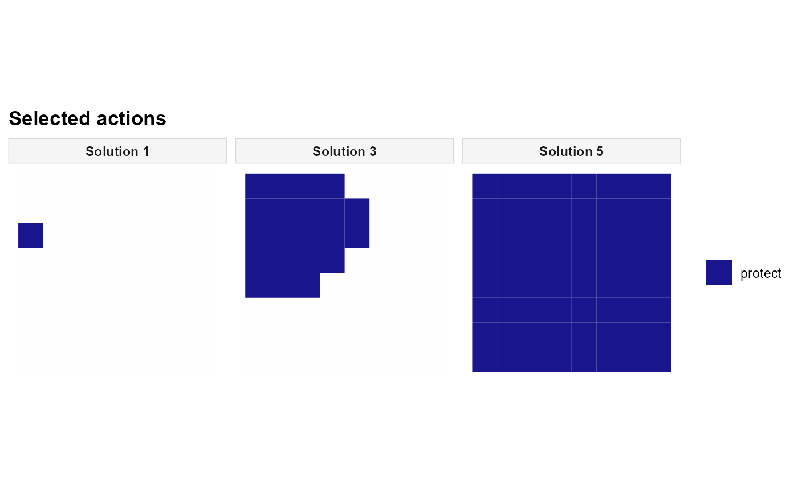

Configure the weighted-sum multi-objective method
Source:R/set_method_weighted_sum.R
set_method_weighted_sum.RdCombine two or more registered objectives using alternative non-negative weights. Each weight combination defines one optimisation run, allowing users to explore trade-offs between objectives such as implementation cost and ecological improvement.
Usage
set_method_weighted_sum(
x,
aliases,
runs = NULL,
weights = NULL,
normalize_weights = NULL,
objective_scaling = FALSE,
control = NULL
)Arguments
- x
A
Problemwith at least two registered objective aliases.- aliases
Character vector of at least two distinct objective aliases.
- runs
A run design from
set_runs_grid()orset_runs_manual(). Manual designs contain columns namedweight_<alias>for each selected objective.- weights
Deprecated numeric weight vector, in
aliasesorder. Useruns = set_runs_manual(...)instead.- normalize_weights
Logical or
NULL. WithNULL, useTRUEfor a grid andFALSEfor manual weights.- objective_scaling
Logical. Request scaling of objective values before weighted aggregation. The default is
FALSE.- control
Optional run-failure settings from
set_runs_control().
Value
An updated Problem with the method stored in
x$data$method. The optimisation runs are executed by solve().
Details
First, register at least two objectives with distinct alias values.
The aliases argument selects which objectives to combine. For each
run, multiscape constructs a weighted scalar criterion and solves the
resulting mixed-integer optimisation problem.
If \(f_k(x)\) is a registered objective and \(w_k \ge 0\) is its weight, the scalarisation combines terms of the form \(w_k f_k(x)\). Minimisation and maximisation directions are reconciled internally: larger values remain preferable for maximisation objectives, smaller values for minimisation objectives. Weights express preferences, not objective values or targets.
Selecting weights. Use runs = set_runs_grid(n = 5) to
generate five combinations for two objectives, including the two single-
objective extremes. Use set_runs_manual() to provide exact weights
in columns named weight_<alias>; each row is a separate run.
Normalisation versus objective scaling. normalize_weights
rescales the weights within each run to sum to one. By default, grid weights
are normalised, whereas manual weights are retained as supplied. This does
not make objectives with different units numerically comparable.
objective_scaling = TRUE instead requests scaling of the objective
values before aggregation, so the preferences are less sensitive to their
numerical ranges. The scaling is performed when solving; reported objective
values retain their original units.
Interpreting solutions. Different weights can produce the same
spatial plan, particularly in discrete optimisation problems. Weighted sums
generally recover supported efficient solutions; they need not find all
non-dominated solutions of a non-convex frontier. For a more systematic
exploration, consider set_method_epsilon_constraint() or
set_method_augmecon(). Zero-weight runs may also have ties that are
not resolved with respect to the omitted objective.
The control argument specifies how to handle unsuccessful runs. A
problem can have only one configured multi-objective method; to compare
methods or weight designs, begin from the same problem before calling a
set_method_*() function. The deprecated weights argument is
still accepted for compatibility, but runs is recommended.
References
Ehrgott, M. (2005). Multicriteria Optimization, 2nd ed. Springer. doi:10.1007/3-540-27659-9 .
Miettinen, K. (1998). Nonlinear Multiobjective Optimization. Kluwer Academic Publishers. doi:10.1007/978-1-4615-5563-6 .
Examples
# EXAMPLE: Trade off management costs against woodland improvement.
# The simulated landscape has 64 planning units and two possible actions.
sim <- load_sim_multiaction()
base <- create_problem(
pu = sim$planning_units,
features = sim$features,
dist_features = sim$dist_features,
cost = "cost"
) |>
add_actions(sim$actions, cost = sim$action_costs) |>
add_effects(sim$effect_assumptions) |>
# Require some improvement, so the cheapest plan is not empty.
add_constraint_targets_relative(0.05, features = "woodland") |>
add_objective_min_cost(
include_pu_cost = FALSE, alias = "cost"
) |>
add_objective_max_effect(
features = "woodland", alias = "woodland"
)
# Five different preferences, from cost-only to woodland-only.
weighted <- set_method_weighted_sum(
base,
aliases = c("cost", "woodland"),
runs = set_runs_grid(n = 5),
objective_scaling = TRUE
)
if (requireNamespace("rcbc", quietly = TRUE) &&
requireNamespace("ggplot2", quietly = TRUE)) {
solutions <- solve(
set_solver_cbc(weighted, time_limit = 30, verbose = FALSE)
)
# Inspect the original objective values across runs.
get_objectives(solutions, format = "wide")
# Explore the observed cost-improvement trade-off.
plot_tradeoff(
solutions, objectives = c("cost", "woodland"),
label_runs = TRUE
)
# Compare three spatial prescriptions in the same figure.
# These are preferences, not necessarily three distinct plans.
plot_spatial_actions(
solutions, solutions = c(1, 3, 5), layout = "single", ncol = 3
)
}


# ALTERNATIVE: supply three explicit weight combinations.
# Reuse 'base', because a Problem can have only one method.
manual <- set_method_weighted_sum(
base,
aliases = c("cost", "woodland"),
runs = set_runs_manual(data.frame(
weight_cost = c(1, 0.5, 0),
weight_woodland = c(0, 0.5, 1)
)),
objective_scaling = TRUE
)